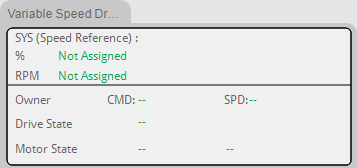
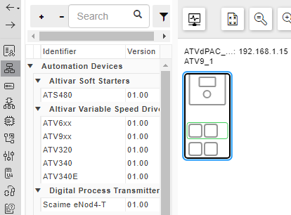
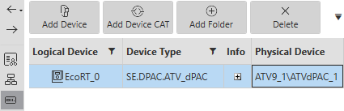
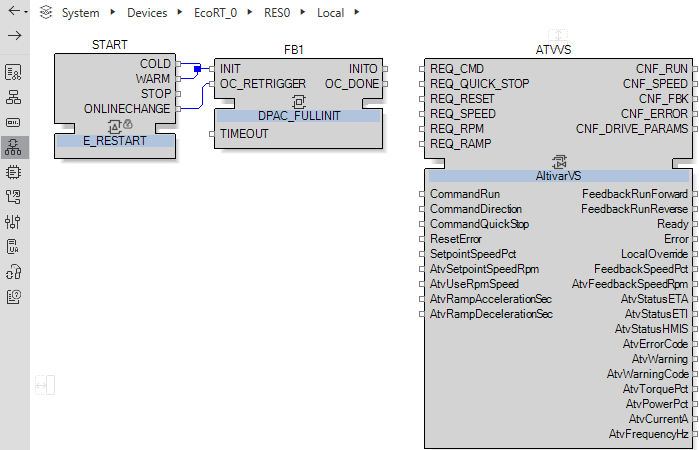
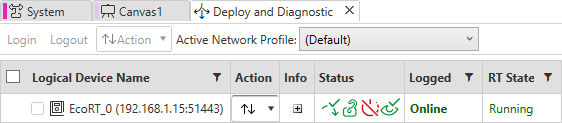

In separate mode the reference and the command can be sent via 2 different channels, follow the Drive Communication chart for more information about this step.
The variable speed drive will have 2 Owners CMD and SPD.
CMD which can be set from:
Terminal block source (the drive or the options modules).
External keypad source (the Graphic Display Terminal (VW3A1111)).
Modbus source.
External communication module.
Ethernet embedded source.
SPD which can be set from:
Analog inputs.
External keypad source (the Graphic Display Terminal (VW3A1111)).
Modbus source.
Communication module
Ethernet embedded source.
The figure below displays the two owners of the ATVSpeedControl.

Follow these instructions to give the run and stop command from the Graphic Display Terminal (VW3A1111):
| Step | Action |
| 1 |
Physical devices
 |
| 2 |
Logical devices
 |
| 3 |
Function Blocks Network
 |
| 4 |
Hardware configuration
|
| 5 |
Deploy and Diagnostic Editor
 |
| 7 |
|